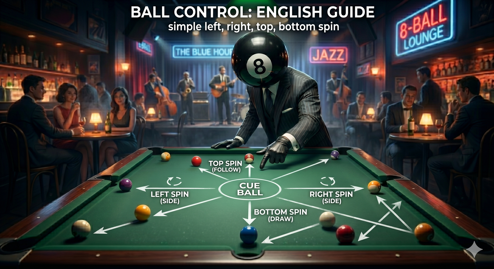

Before you touch the cue, you have already told everyone in the room whether you believe in yourself.
Most players have no idea how loud they are. They walk to the table broadcasting their internal state in every movement — the pace of their steps, the set of their shoulders, how they grip the cue before they've even examined the layout. It is not the shot that reveals a player. It is the walk to the shot.
This is what I mean by the language of stillness. Stillness is not the absence of movement. It is the quality of movement when a person is not fighting themselves. And most players, in high-stakes moments, are at war with themselves in plain sight.
“The dangerous ones enter a room the same way every time. They have already decided.”
The Walk
Watch a player approach the table after their opponent's miss. Three things reveal their current psychological state: pace, line, and weight distribution.
Pace tells you about urgency. A player moving too quickly to the table is responding to stimulation — they're excited by the opportunity, perhaps anxious to capitalize before some invisible clock runs out. This urgency carries into the shot. They don't see the full table. They see the obvious pocket and move.
A player who slows down as they approach the table is a different kind of problem. Not slow out of indifference — slow because they're already computing. The deceleration is deliberate. They are transitioning from the kinetic energy of watching to the focused stillness required for execution.
Line tells you about intention. Does the player walk directly to the ball they intend to shoot, or do they pause at a position that gives them the full table view? The player who always moves directly to the immediate shot is playing reactively. The player who stops at center table first, scans, then moves — that player is playing a different game entirely.
Weight distribution is the most honest signal of all. A player carrying tension in their upper body holds it in their shoulders. You will see it in how they hold the cue — a slight elevation of the elbow, a stiffness in the wrist. Tension here propagates into the stroke. Physics demands it.
The Setup
The way a player addresses the ball tells you whether they've done this before in their mind before they do it with their body. Elite players execute their pre-shot routine before they are physically down on the shot — the mental rehearsal, the visualization of the cue ball's path, the confirmation of the aim point. By the time their chin is near the cue, the decision is already made. The stroke is just the delivery.
Intermediate players do it in reverse. They get down, look at the shot, and then decide. You can watch this process — the micro-adjustments, the multiple looks back and forth, the hesitation before the final stroke. They are making the decision while exposed, which means the decision is being made under physical and psychological duress.
The more a player fidgets in their stance, the more they are still negotiating with themselves. The player who addresses the ball once, pauses, and delivers a clean stroke has resolved the internal argument before it became a public one.
“The body does not lie in the way the face does. It has no training in deception.”
The Grip
Grip pressure is the most subtle and most diagnostic signal available. An expert pool player holds the cue with something approaching indifference — the grip is functional, not forceful. The cue is a tool, not a hostage.
Grip pressure increases under psychological load. When a player is anxious, when the shot matters more than it should, the hand closes. The forearm loads. And grip pressure, above a certain threshold, is death to a pure stroke. It transforms a pendulum into a lever. The cue stops swinging freely and starts being pushed.
Watch the knuckles on the bridge hand. White knuckles at address are not a sign of control — they are a sign of fear presenting itself as control. The composed player's bridge hand is relaxed. The fingers are placed, not clutched. There is a distinction, and it is visible from fifteen feet away.
What to Do with This
Two applications. One for watching others. One for watching yourself.
For watching others: you don't need to see someone's face to know their psychological state at the table. Observe the walk, the setup, the grip. Observe whether their routine is consistent or variable under pressure. Consistency is the signature of the composed mind. Variability is the signature of a system under stress. Calibrate your strategy accordingly.
For watching yourself: most players have never watched themselves on video. They have a model of themselves that doesn't match their actual performance. Record yourself in practice and in competition. Compare the footage. The gap between what you think you look like and what you actually look like is the gap you need to close before any technical improvement will hold under pressure.
The discipline of stillness is not natural. It is cultivated. It requires the development of a meta-awareness — the ability to observe your own body as an opponent might observe it. When you can do that, you stop broadcasting. You stop being readable. And you start becoming the dangerous kind of player in the room: the one who is still before the shot, and still after it, regardless of what happens to the ball.
